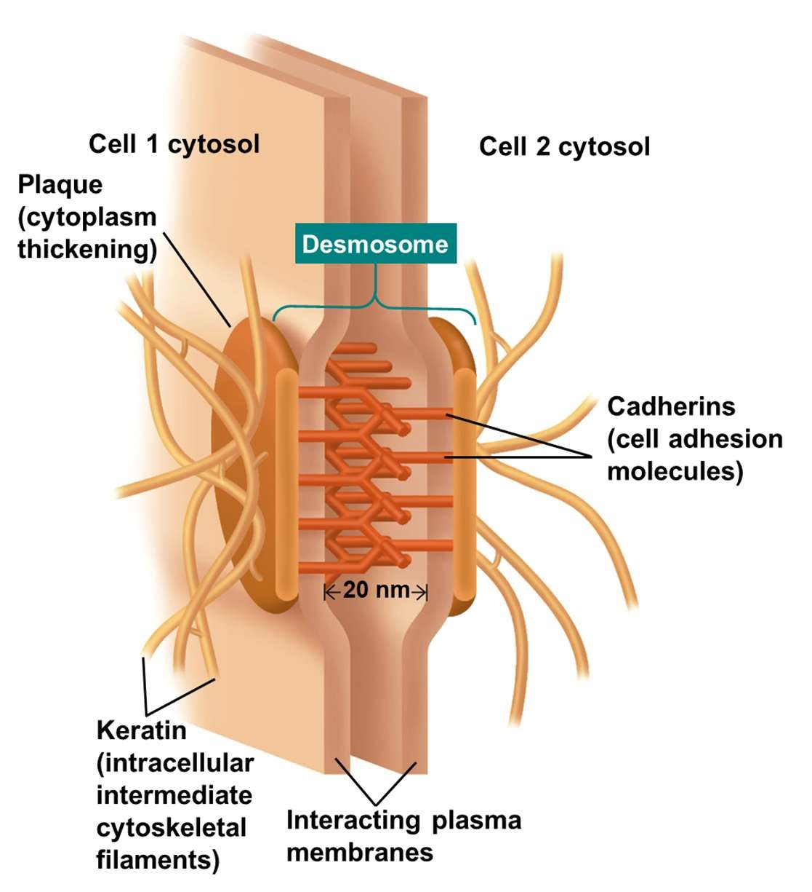

BIO103 · 第 5 章
细胞间通讯
Cell–Cell Communication
虚线下划线为术语；悬停查看中文、英文与释义，完整词典见“术语”。
本章目录
本章从细胞为什么需要通讯讲起，先看细胞如何被黏附与连接在一起，再按“局部—长距离—突触”的顺序梳理化学信号，最后落到膜受体如何把胞外信号转成胞内应答。
本章要点
- 细胞通讯分接收、转导、应答三个阶段，本质是把胞外信号转成不同的胞内效应。
- 细胞黏附由细胞黏附分子介导；ECM 的胶原、弹性蛋白与纤连蛋白提供“生物胶”。
- 桥粒像“魔术贴”，在受拉伸的组织中最丰富；紧密连接封闭细胞间隙；缝隙连接由连接子构成。
- 局部信号分旁分泌与自分泌；长距离信号分内分泌与突触信号。
- 动作电位由电压门控 Na⁺ 与 K⁺ 通道的顺序开闭驱动，全或无。
- 5-HT 由色氨酸合成，经 SERT 回收、MAO 降解；SSRI 阻断 SERT。
- 亲脂信号分子穿膜结合胞内受体；亲水信号分子结合三类膜受体：配体门控通道、GPCR、酶联受体。
5.1 细胞为什么通讯：三阶段框架
细胞通讯对维持基本细胞活动、协调多个细胞达成同一结果、协调多细胞生物中不同细胞类型的活动都是必需的；它刺激细胞分裂、分化与免疫等重要事件。讲义把它也称为细胞信号传导cell signalling：细胞感知并正确响应微环境变化，从而改变其他细胞的生化活动。
一次完整的信号过程分三段：接收reception——细胞用受体蛋白检测信号分子（配体ligand）；转导transduction——信号被中继并转换为胞内形式，常涉及被激活的蛋白级联与第二信使second messenger；应答response——最终被触发的细胞活动，如基因表达、蛋白活性或细胞功能的改变。
细胞外信号之所以能产生不同的胞内效应，靠的是“同一配体—不同受体—不同通路”的组合，而不是信号分子本身携带指令。这一点是理解后面三类膜受体分工的前提。
L7–8 p.1–2
5.2 细胞黏附与细胞外基质蛋白
把细胞连在一起有三类常见机制，均由细胞黏附分子cell adhesion molecule（CAMs）介导。这些特化蛋白从相邻细胞的膜上伸出，形成钩或环，相互勾连把细胞固定在一起，例如 cadherins 与 integrins。细胞外基质（ECM）把细胞结合在一起，充当生物“胶”，含三类主要蛋白纤维：
- 胶原（collagen）：形成柔性、非弹性的纤维或片层，提供抗张强度。
- 弹性蛋白（elastin）：使组织能够伸展后回弹。
- 纤连蛋白（fibronectin）：促进细胞黏附，把细胞锚定在位。
cadherin–cadherin 之间的相互作用受细胞外 Ca²⁺ 门控：Ca²⁺ 使 cadherin 的胞外域变硬，促进跨连接（trans）的相互作用。细胞之间还通过桥粒、紧密连接与缝隙连接相连；不同组织使用不同类型的黏附结构，这一点决定了下面三种连接各自的分布。

L7–8 p.3
5.3 桥粒与心肌闰盘
桥粒desmosome像“魔术贴”，把两个相邻但互不接触的细胞锚定在一起；它在承受拉伸的组织中最为丰富。桥粒由两部分组成：斑块（plaques）与含 cadherins 的糖蛋白丝。其分子逻辑是“胞内骨架—斑块—跨膜 cadherin—相邻细胞的 cadherin—斑块—骨架”，从而把机械力从一个细胞传到下一个细胞。
心脏中的桥粒位于闰盘intercalated disc——相邻心肌细胞之间的连接复合体。闰盘含三种关键结构：桥粒、缝隙连接与钠通道。讲义以此引出致心律失常性心肌病arrhythmogenic cardiomyopathy（AC）的发病理论：AC 可源于心肌细胞变性、（嗜心性病原体感染引起的）心肌炎症，和/或心肌细胞或祖细胞转分化为产生脂肪与纤维性瘢痕的细胞。
L7–8 p.4–5
5.4 紧密连接与乳糜泻的“肠漏”
紧密连接tight junction是不通透的连接，在靠近管腔面处连接上皮细胞的侧缘，阻止物质在细胞之间穿行；只有受调控的物质才能穿过这些细胞本身。因此紧密连接形成高度选择性的屏障，把化学组成差异很大的两个区室分开。它的四个特征是：把相邻细胞牢固黏合；封住两细胞之间的通路；主要见于上皮组织（覆盖皮肤、体腔与血管）；防止上皮片层内发生渗漏。
在生理条件下，细胞间的旁细胞扩散由紧密连接限制，其主要跨膜蛋白为 claudin、occludin 与连接黏附分子（JAM）；这些蛋白形成孔道，并通过由接头蛋白与信号调节因子构成的细胞质斑块连接到 actomyosin 环。紧密连接还经 polarization complex 调控细胞极化，通过阻止顶面与基底侧面跨膜成分混合来维持顶-底不对称性。
乳糜泻展示了这套屏障失效的过程：摄入麸质后，异常的炎症反应产生高水平的细胞因子，如肿瘤坏死因子-α（TNFα）与干扰素 γ（IFNγ）；这些细胞因子增加肌球蛋白轻链激酶（MLCK）的产生；MLCK 进而减少 ZO-1 与 occludin；形成屏障的 claudin 被下调，polarization complex 的表达也降低。净结果是细胞去极化、紧密连接内化与“肠漏”。
L7–8 p.6–7
5.5 缝隙连接与连接子
缝隙连接gap junction是相邻细胞之间由小型连接隧道相连的间隙，隧道由连接子connexon构成，在心肌与平滑肌中十分丰富。一个连接子由 6 个连接蛋白connexin围成中空管；连接子贯穿膜的整个厚度；两个连接子（每个细胞各提供一个）伸出并在端端相接，形成两细胞之间的连通隧道。
隧道允许带电荷的离子与小分子在相邻细胞间移动，也允许小的营养分子通过，大分子不能通过。一个缝隙连接通道由两个连接子（或称半通道，hemichannel）组成，跨越细胞间隙；这些通道成簇分布在两片质膜之间，间隙宽 2–4 nm。每个 connexin 是整合膜蛋白，含 4 个跨膜段。传递电信号时，可通过的分子小于 1500 Da，因此这种传递是相对非特异的。
命名规则要分清层级：connexin 是单个蛋白亚基；同聚连接子（homomeric connexon）的 6 个亚基完全相同，异聚连接子（heteromeric connexon）含多种 connexin；同型缝隙连接（homotypic）由两个相同的半通道对接，异型（heterotypic）由两个不同的半通道对接。
讲义顺带给出整合膜蛋白按拓扑的分类：单次插入且只附着于膜一侧的 monotopic；单次跨膜的 bitopic；多次跨膜的 polytopic；由 β 折叠片构成跨膜孔的 β-barrel。
L7–8 p.8–10
5.6 化学信号的类型
讲义按作用距离与是否需要接触，把化学信号分为几类。胞间连丝（plasmodesmata）是植物细胞的等价结构：细胞质通道穿过植物细胞壁，连接相邻细胞。内分泌：内分泌细胞把激素分泌进循环系统，激素经血液长距离运输到远端靶细胞。旁分泌：信号在细胞外液中局部扩散，只影响邻近细胞；自分泌与神经元信号（突触信号）被视为旁分泌的特化亚型。此外，离子与小分子可经缝隙连接通道传递，这类通讯需要细胞间的直接物理接触。
把这几类放在一张谱上：接触依赖（缝隙连接、胞间连丝、膜表面分子互作）→ 局部扩散（旁分泌、自分泌、突触）→ 经血液的长距离（内分泌）。距离越远，信号越依赖运输系统与特异性受体。
L7–8 p.11
5.7 旁分泌与自分泌
旁分泌paracrine signalling指一个细胞释放的信号分子只作用于近旁的靶细胞。例：神经细胞把电冲动信号传给肌细胞，诱发或抑制肌肉收缩。
自分泌autocrine signalling是“自我靶向”：细胞分泌的信号分子结合到自身表面的受体，触发同一细胞内的应答。例：巨噬细胞分泌细胞因子激活自身，启动胞内反应级联。
两者可以同时发生。讲义以前列腺素prostaglandins为共享例子：这是一类激素样物质，调节炎症、疼痛与子宫收缩等多种机体功能，兼具自分泌与旁分泌作用。
| 维度 | 自分泌 | 旁分泌 |
|---|---|---|
| 靶细胞 | 分泌信号的细胞自身 | 邻近或紧邻的细胞 |
| 信号分子 | 生长因子、细胞因子 | 激素、神经递质 |
| 典型例子 | 早期胚胎器官发育中的细胞分化 | 突触处的神经递质信号 |
L7–8 p.12–13
5.8 内分泌信号与 HPA 轴
内分泌信号endocrine signalling使细胞能与远距离的靶细胞通讯：激素（循环信号）由内分泌细胞分泌，经循环系统运输，结合远端靶细胞上的受体。其效应不限于单个细胞；响应速度可快可慢，取决于信号本身。例：肾上腺素触发“战或逃”反应。
讲义以下丘脑–垂体–肾上腺（HPA）轴说明一条完整的内分泌链条。触发因素为环境应激：下丘脑释放 CRH（促肾上腺皮质激素释放激素）；CRH 作用于垂体，刺激 ACTH（促肾上腺皮质激素）释放；ACTH 经血液到达肾上腺；肾上腺分泌皮质醇（cortisol），产生广泛的全身应激反应。
这条轴的考点在于“层级放大”：每一级都是一次信号转换与放大，最终一个环境刺激被转成全身性的激素水平变化。
L7–8 p.14
5.9 突触信号与动作电位
化学突触的结构包括：突触前神经元（信号发出细胞，冲动沿轴突传向末梢）；末梢（含突触小泡与线粒体）；小泡（储存神经递质）；突触间隙synaptic cleft（分隔前后膜的小间隙）；突触后神经元（接收化学信号的靶细胞）。释放的递质扩散过间隙，结合突触后膜上的受体。
动作电位action potential是兴奋性细胞（神经元、肌细胞）膜电位的快速、全或无变化，由电压门控 Na⁺ 与 K⁺ 通道的顺序开闭驱动。其阶段为：静息状态下 Na⁺ 通道关闭（激活门关、失活门开）、K⁺ 通道关闭；去极化达到阈值即触发动作电位；上升相 Na⁺ 通道开放、Na⁺ 内流；峰值时 Na⁺ 通道失活关闭、K⁺ 通道开放；下降相 K⁺ 外流；随后是低于静息电位的后超极化；最后 K⁺ 通道关闭、Na⁺ 通道复位，Na⁺/K⁺ ATPase 恢复离子梯度。
动作电位的两个传播性质是：单向传播；传播过程中幅度不衰减。传播方式分连续传导（无髓纤维，逐段扩散）与跳跃式传导（有髓纤维，动作电位在郎飞结之间“跳跃”，速度快得多）。
L7–8 p.15–17
5.10 化学突触传递与 5-HT
突触分两类：电突触由缝隙连接把神经元直接相连；化学突触由化学信使跨越连接，是更常见的一类。化学突触传递的步骤是：动作电位到达突触前末梢；电压门控 Ca²⁺ 通道开放，Ca²⁺ 进入突触前终末；突触小泡与突触前膜融合，经胞吐把递质释放进间隙；递质扩散并结合突触后膜（subsynaptic membrane）上的受体，这些受体是化学门控离子通道；受体开放后离子流动，改变突触后电位，从而改变突触后神经元发放动作电位的概率。
5-HT（血清素）通路是本讲的完整案例。合成：L-色氨酸经色氨酸羟化酶（TH）氧化生成 5-HTP，再经芳香族 L-氨基酸脱羧酶（AADC）脱羧生成 5-HT。突触前神经元中的处理步骤为：色氨酸进入胞体并转为 5-HTP；脱羧生成 5-HT；包装进突触小泡；动作电位触发小泡融合并释放；5-HT 结合突触后膜的多种受体亚型；由突触前 5-HT 转运体（SERT）从间隙回收；回收的 5-HT 可重新包装；未被回收的由单胺氧化酶（MAO）降解为 5-HIAA（主要代谢产物）。
SSRI（选择性 5-HT 再摄取抑制剂）阻断 SERT，减慢回收，提高突触间隙中的 5-HT 浓度。讲义列出其代表药物（氯米帕明、氟西汀、帕罗西汀、舍曲林、西酞普兰、艾司西酞普兰、伏硫西汀）、适应证（重度抑郁、强迫症、惊恐障碍、神经性贪食、创伤后应激障碍）与副作用（胃肠道反应如恶心、呕吐、便秘；性功能障碍如射精延迟）。实验数据显示，运动与氟西汀均可显著增加齿状回中 DCX 阳性细胞（未成熟新生神经元）与树突棘密度。
Clean vector diagram of a serotonergic synapse: presynaptic terminal with tryptophan entering, conversion to 5-HTP then 5-HT, synaptic vesicles releasing 5-HT into the cleft by exocytosis after calcium influx, 5-HT binding receptors on the postsynaptic membrane, presynaptic serotonin transporter SERT recycling 5-HT, MAO converting remaining 5-HT to 5-HIAA, and an SSRI symbol blocking SERT. Flat 2D, thin strokes, muted slate blue and warm grey, white background, English labels, no cartoon, no gradient, no shadow.
L7–8 p.18–22
5.11 神经传递的特征、信号分子与膜受体
化学神经传递依赖多个顺序步骤，因而具有一组可考的特征：存在时间延迟（最小约 0.1 ms），来自小泡融合、递质扩散与受体结合的生化步骤；传递是单向的，因为释放机器只位于突触前末梢、受体只位于突触后膜；突触信号可以是兴奋性的或抑制性的；在突触前与突触后都具有高度可塑性；对靶细胞产生快速、离散的激活。
重要信号分子分三类：神经递质（在突触间传递信号的脑内化学信使）、激素（经局部与长距离内分泌信号调节细胞功能）、细胞因子（主要介导免疫反应）。按化学性质分，信号分子可为亲脂或亲水、小或大，包括气体、肽与脂质。亲脂性信号分子lipophilic signalling molecule（类固醇或甲状腺激素、前列腺素等二十烷酸类、一氧化氮）可直接穿膜，结合胞内受体蛋白，通常通过改变基因活性产生较慢的应答；亲水性信号分子lipophobic signalling molecule（乙酰胆碱、谷氨酸、加压素与胰岛素等肽类、肾上腺素）经胞吐分泌，不能自由穿膜，留在细胞外液并结合细胞表面受体，一般触发快速应答。
亲水信号经膜受体发挥作用有三条途径：配体门控通道（离子型受体）——配体结合直接控制跨膜离子流；G 蛋白偶联受体（代谢型受体）——配体结合后可开放离子通道或改变胞内酶活性，经第二信使传递；酶联受体——配体结合激活受体自身的酶活性（如受体酪氨酸激酶），引起受体二聚化、胞内域酪氨酸磷酸化并激活下游通路。
讲义另以酶与配体的结合作补充：结合具有高特异性，强度用亲和力（affinity）与解离描述；结合先于催化；活性可被激活或抑制。底物结合有两种模型——锁钥模型（底物恰好嵌入预先形成的活性位点）与诱导契合模型（酶在底物结合时改变形状，活性位点重塑以容纳底物）。别构调节发生在活性位点之外的别构位点：别构抑制使活性位点变形而无法有效结合底物，别构激活则重塑活性位点以利于结合。
L7–8 p.23–27
5.12 信号转导的三阶段与细胞应答
经膜受体的化学信号分三阶段。第一，细胞接收：信号分子结合细胞表面的受体。第二，信号转导：配体结合诱导受体构象改变，启动胞内的生化级联，即信号转导通路。第三，细胞应答：级联触发细胞反应。
应答有两个值得记住的量化与分类要点。其一是信号放大：单个配体分子可触发涉及超过 10⁸ 个下游效应分子的应答。其二是应答发生的部位分三层：质膜——离子通道开闭、细胞代谢调节；细胞质——细胞骨架重排与重塑；细胞核——转录因子激活或抑制、基因诱导或沉默、酶与其他蛋白的从头合成。
讲义以生长因子为例串起整条链：生长因子结合受体 → 磷酸化级联 → 转录因子激活 → 基因转录与 mRNA 产生。这一例子说明“应答”往往不是单一事件，而是从膜到核的连续过程。

L7–8 p.28–29